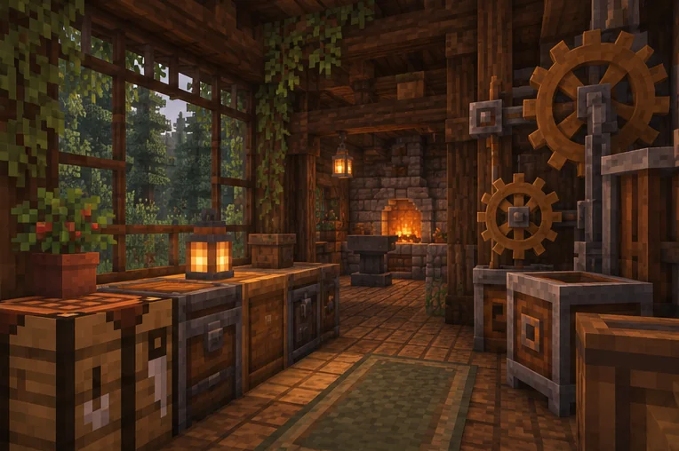
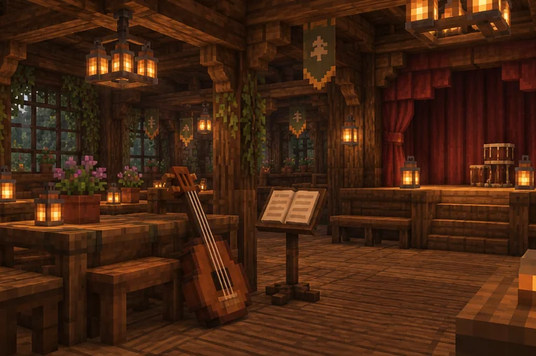
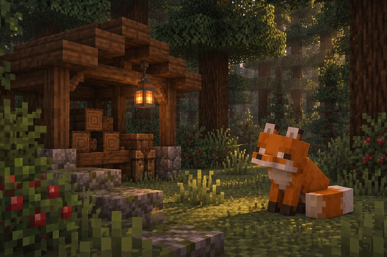
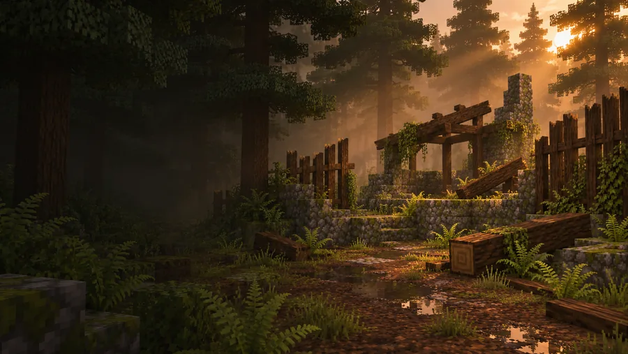

Construcción y tecnología
Enciende el taller
Pon una máquina a trabajar y haz que cada material encuentre su sitio.
Ver guía de producción →Con el taller encendido y la mesa puesta, siempre hay un plan. Ven a construir, a tocar con tus amigos o a descubrir qué hay detrás de los abetos.
Fotos y relatos que los jugadores de Zona Cero comparten desde Minecraft.

Pon una máquina a trabajar y haz que cada material encuentre su sitio.
Ver guía de producción →
Junta a tus amigos, prepara el escenario y toca algo que se quede en la memoria del grupo.
Ver guía de música →
De la cosecha a la cantina, prepara un menú para recibir a quien vuelva a casa.
Ver guía de cocina →
Prepara un rincón en el refugio y llévate a un nuevo compañero de vuelta a casa.
Ver guía de mascotas →
Busca un valle sin cartografiar y deja en el mapa una ruta que otros puedan seguir.
Ver guía de exploración →Cultiva, cocina para el grupo y abre tu propio puesto.
7 guías →Construcción y tecnologíaLevanta una casa o pon a trabajar tu primer taller.
4 guías →CulturaToca con tus amigos y monta una galería.
5 guías →MascotasDale un hogar a un zorro o a tu compañero favorito.
3 guías →MosslornHaz equipo y prepara el Canal para recibir a más gente.
5 guías →Clima y estacionesSiembra a tiempo y lee las señales del cielo.
4 guías →ExpedicionesDescubre cuevas y ruinas. Deja una ruta para quien siga.
10 guías →MovilidadMueve suministros por tierra, agua o aire.
4 guías →SupervivenciaPrepara curas y un campamento para pasar la noche.
5 guías →CombateEntrena en equipo y defiende a tus vecinos.
3 guías →BestiarioConoce las criaturas que acechan entre los abetos.
4 guías →Herramientas y servidorAcomoda tus controles, recetas y servidor.
2 guías →El Overworld tiene un radio de 24.000 bloques. Terralith 2.5.4 acompaña a Tectonic y Biomes O’ Plenty en chunks nuevos. Bajó cerca de 30 % el espaciado de 29 conjuntos de estructuras semi-vanilla. Los cuatro conjuntos de aldeas conservaron su frecuencia.
Llegaron The Bumblezone, Trotting Wagons, Potion Vials, Raids: Enhanced, SCP-705, AFK Camera y Auto Attack. Se verificaron el arranque, el ingreso en copia y el guardado. Falta probar cada mecánica en partida. In Control también rechaza un tercio de los intentos naturales de nueve tipos de peces. Las cubetas y la pesca con caña quedan fuera del filtro.